Bench-to-pilot scale-up of microwave dewatering for deep-sea polymetallic nodules at Sepro Mineral Systems, from a 3.2 kW bench unit to a 140 kW pilot system.
- Organization
- Sepro Mineral Systems
- Role
- Metallurgical Engineering Co-op
- Tools
- Allen-Bradley HMI · Excel
- Output
- Minerals Engineering (2026), acknowledged
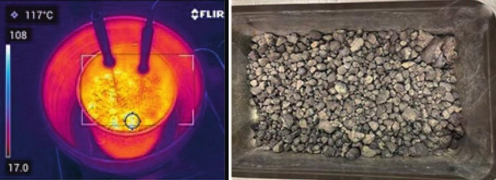
Microwave dewatering of polymetallic sea nodules: can microwaves remove water more cheaply and cleanly than conventional heating?
~63% less energy per tonne at pilot scale, with up to 24% of mass removed as moisture.
The problem
- Demand is rising for the metals in sea nodules (Mn, Ni, Cu, Co, Fe), partly because land-based deposits are being depleted.
- The nodules are full of water. About 71% of it is free water and 29% chemically bound.
- Water is expensive. It adds transport cost and has to be removed before high-temperature processing. The bound water takes the most energy.
Why microwaves
- Conventional dehydration is costly. Rotary kilns and furnaces need a lot of energy and long residence times, so they mean high cost and CO₂ emissions.
- Microwaves heat the material directly and run on electricity, which can come from renewable sources such as wind and solar.
What we tested
- Water removal only. Microwaves were used as a dewatering step before calcination, to remove water rather than break the material down.
- No ore weakening needed. The nodules are soft enough to crumble by hand, so the usual use of microwaves to weaken hard ore before grinding didn't apply.
- Bench vs. pilot. Is microwave dewatering economically and environmentally viable, and how does the energy needed change from bench to pilot scale?
- Operated the 140 kW pilot microwave system through its Allen-Bradley HMI: set forward power, monitored process response and responded to abnormal operating conditions.
- Analyzed moisture removal, power input, residence time and scale-up behaviour in Excel, including regression and power-density calculations for the bench-scale data.
- Planned and ran every bench-scale test: sample allocation, splitting, measurement and observation (details below).
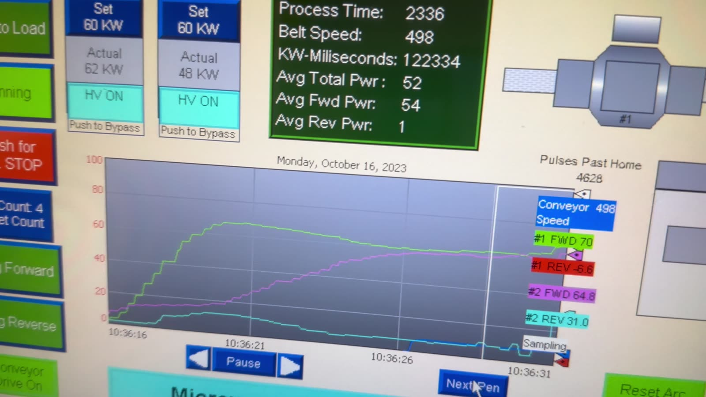
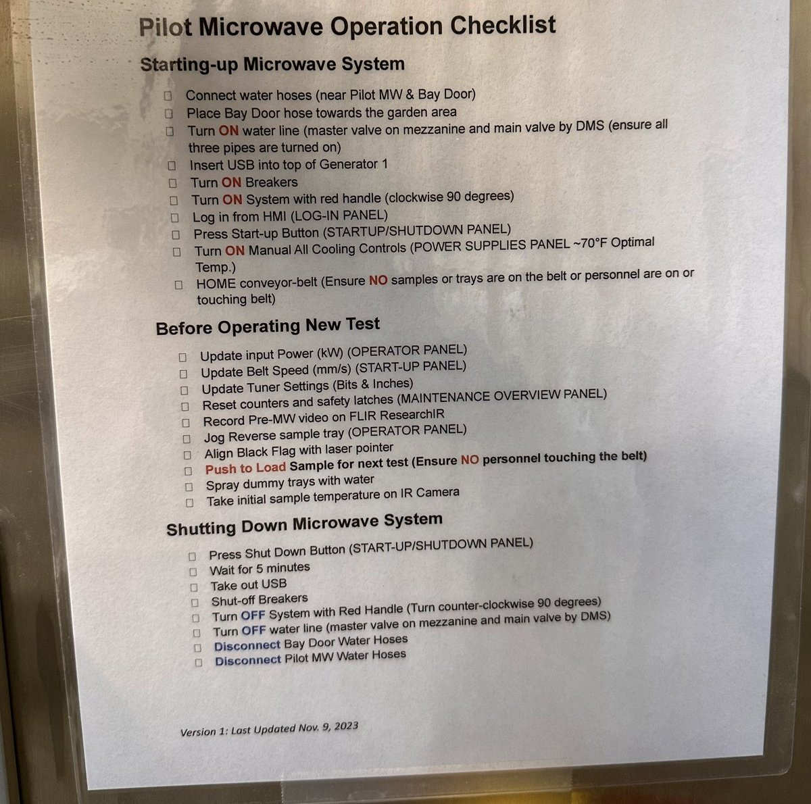
- Bench: batch trials on a 3.2 kW, 2450 MHz unit, with each 200 g sample in a 1 L quartz crucible, mapping mass loss against specific energy.
- Pilot: a 915 MHz conveyorized system built by Thermowave, with two 75 kW magnetron transmitters feeding a 1 m cavity, controlled through an Allen-Bradley PLC and HMI (140 kW max setting). Run in batches: the sea nodules heated past the melting point of the conveyor's polypropylene trays, so each 5 kg charge was treated in place in a 5 L quartz crucible, set in a polypropylene bucket under an HDPE lid drilled to let steam escape.
- Why quartz: it's transparent to microwaves, so the energy goes into the nodules rather than the container.
- Scale-up: compared specific energy (kWh/t) and moisture removal across scales.
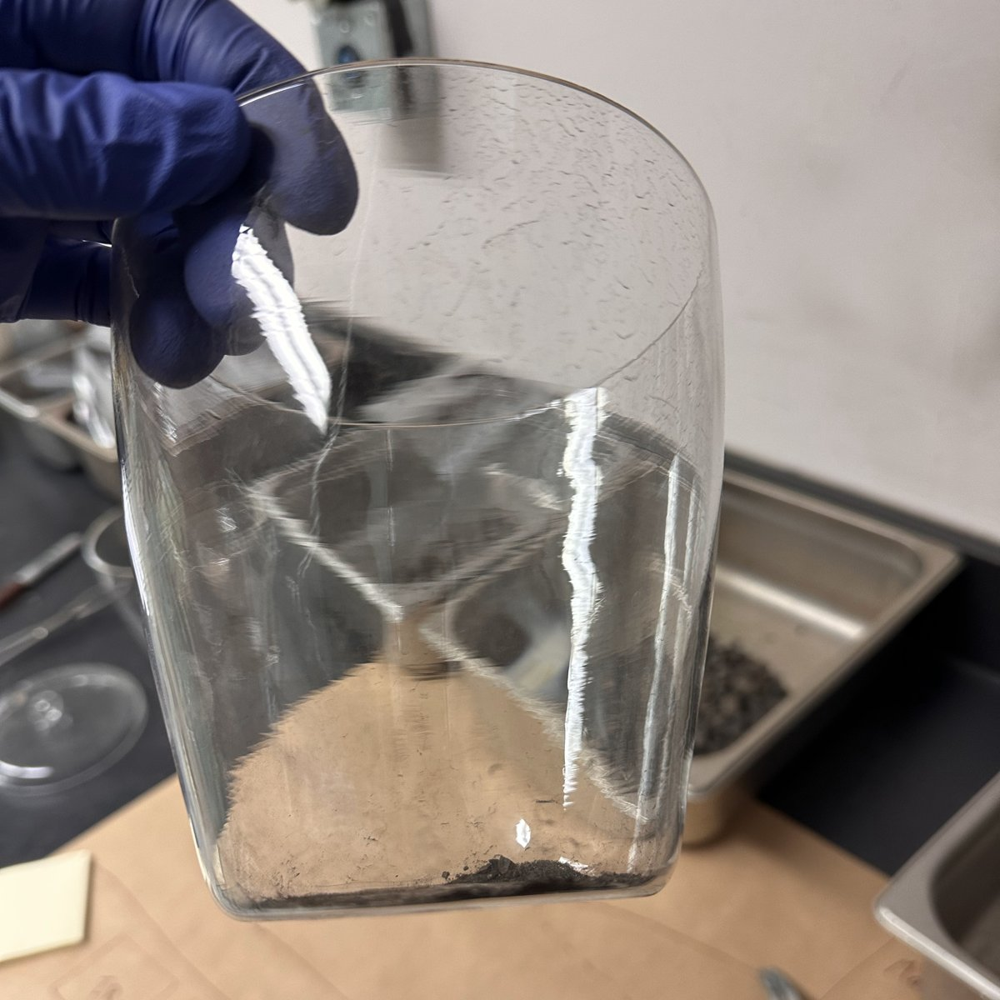
- Allocation: received 54.8 kg of sea nodules and set aside 4.8 kg (~8.8%) for bench-scale testing: 24 samples of 200 g each.
- Splitting: screened at 19 mm (21% oversize, 79% undersize). The undersize went through a rotary splitter into 24 charges; two charges plus a 0.2 kg riffle split gave 3.8 kg. The oversize was cone-and-quartered down to 1 kg. The combined 4.8 kg went back through the rotary splitter into 24 samples of 200 g, each keeping the same 21/79 size split.
- Test plan: residence times of 30, 60, 90, 120, 180 and 240 s, each in triplicate. A 105 s set was added once melting showed up between 105 and 120 s.
- Measurements per test: initial and final mass, surface temperature (IR camera) and bulk temperature (type K thermocouple), plus photos and notes on arcing and steam release.
- Quench calorimetry: helped run hot-screening and water-quench tests to measure where the heat went in a treated sample. Right after treatment the sample was screened at 12.5 mm and each fraction quenched in 1 L of water; the water's temperature rise gave the heat each fraction held. At 105 s the coarse pieces held 77% of the heat, consistent with their size being closer to the microwave penetration depth. By 120 s the split was even, as heat conducted from the coarse pieces into the fines.
- Arcing on the first test: arcing started almost immediately, so I stopped the test, restarted it and ended the repeat trial 5 s earlier to confirm safe operation. Arcing was expected for this material.
One bench test, step by step
1Weigh
200 g split sample in a 1 L quartz crucible: initial mass m0.
2Heat
Crucible at the centre of the cavity for a set time, 30 to 240 s. Every time run in triplicate.
3Measure
Straight out of the cavity: the IR camera reads the surface; a type K thermocouple in the pile reads the hottest bulk temperature.
4Weigh again
Final mass m1. Mass loss = (m0 − m1) / m0, the water driven off.
My diagram of the bench test procedure, not to scale.
Where the heat went
| Heating time | Size fraction | Heat held | Water ΔT | Share of heat |
|---|---|---|---|---|
| 105 s | < 12.5 mm | 8,778 J | 2.1 °C | 22.6% |
| > 12.5 mm | 30,096 J | 7.2 °C | 77.4% | |
| 120 s | < 12.5 mm | 33,858 J | 8.1 °C | 50.3% |
| > 12.5 mm | 33,440 J | 8.0 °C | 49.7% |
q = m·cp·ΔT for 1,000 g of water (cp = 4.18 J/g·°C). From Table 3 of Marzoughi et al. (2026), Minerals Engineering 235, 109879, CC BY 4.0.
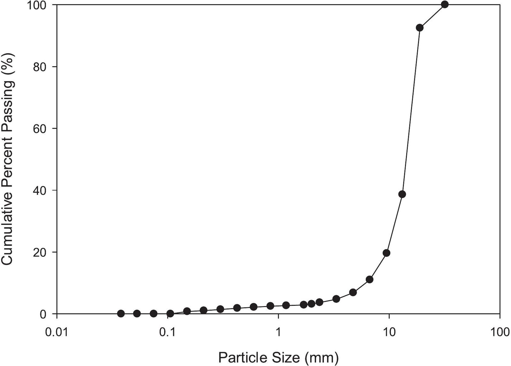
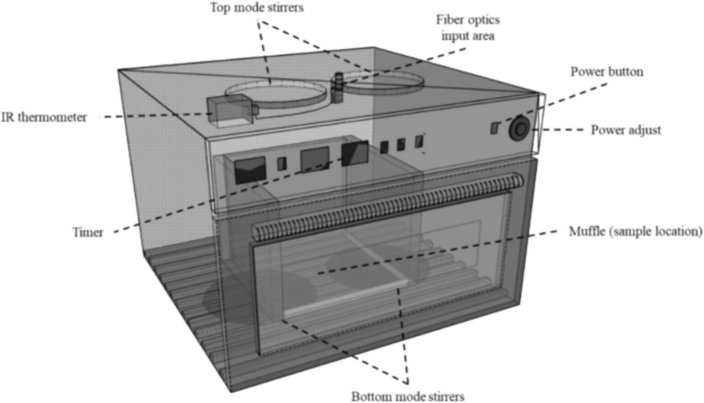
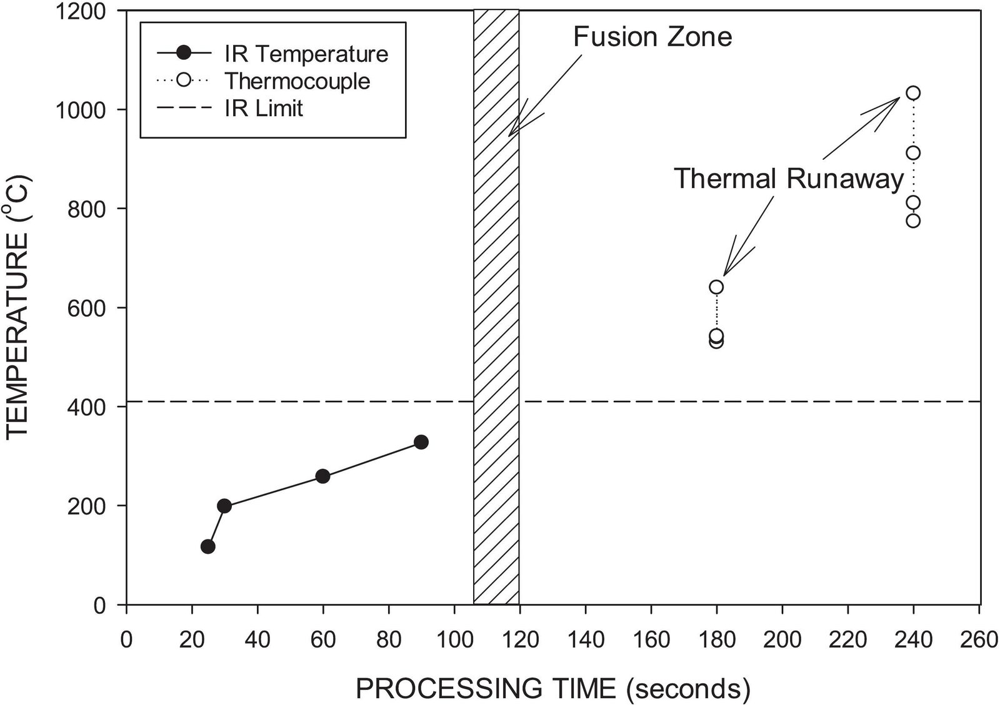
I tabulated mass loss for every bench test in Excel and built a model of mass loss against residence time.
- Does residence time matter? A single-factor ANOVA across the residence-time groups (α = 0.05) gave F = 622 against Fcrit = 3.0 (p ≈ 3 × 10⁻¹⁴). Mass loss depends strongly on residence time.
- First model: after trying logarithmic and logistic fits, I used M(t) = A(1 − e−kt). R² was 0.976, but the residuals followed a pattern: over-predicting at 25–60 s, under-predicting at 90–120 s and over-predicting again at 240 s. The curve had the wrong shape.
- Second model: adding a shape factor, M(t) = A(1 − e−(kt)p), scattered the residuals evenly around zero. The sum of squared errors fell 85% (30.9 → 4.6 %²), R² rose to 0.996 and the residual standard error dropped from 1.31% to 0.52%.
- What the fit says: mass loss levels off at A = 31.1% (240 s average: 30.8%). The time constant, 1/k ≈ 85 s, matches free water being gone by about 80 s. After that the drying rate falls sharply, because what's left is bound water.
- Follow-up in Python: Excel gave me the fit but no confidence intervals, so after the co-op I refit both models with SciPy. It reproduces the Excel numbers and adds 95% intervals: A = 31.1% (30.3–31.9), p = 1.41 (1.32–1.50), 1/k = 85 s (82–89). The interval on p excludes 1, so the shape factor reflects a real change in curve shape rather than just an extra parameter.
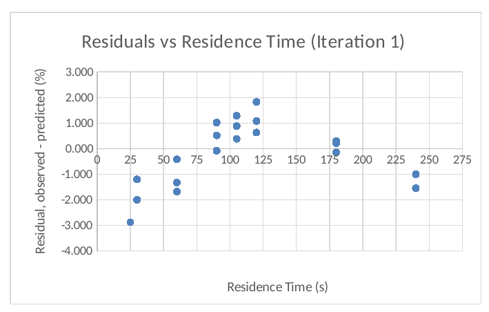
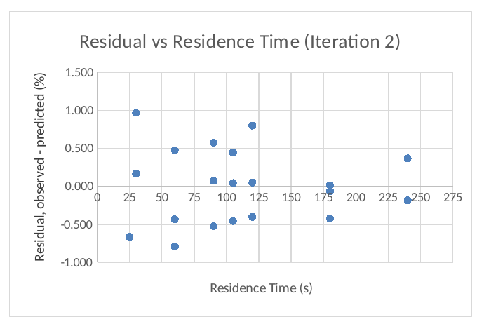
Above: my original Excel charts. Below: the Python refit, with both iterations' residuals on one axis.
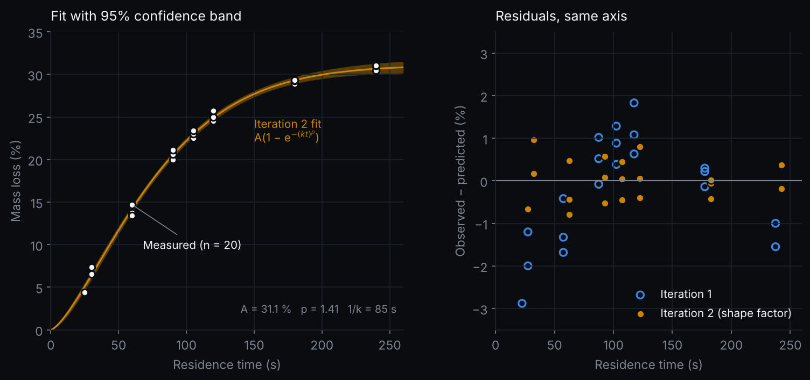
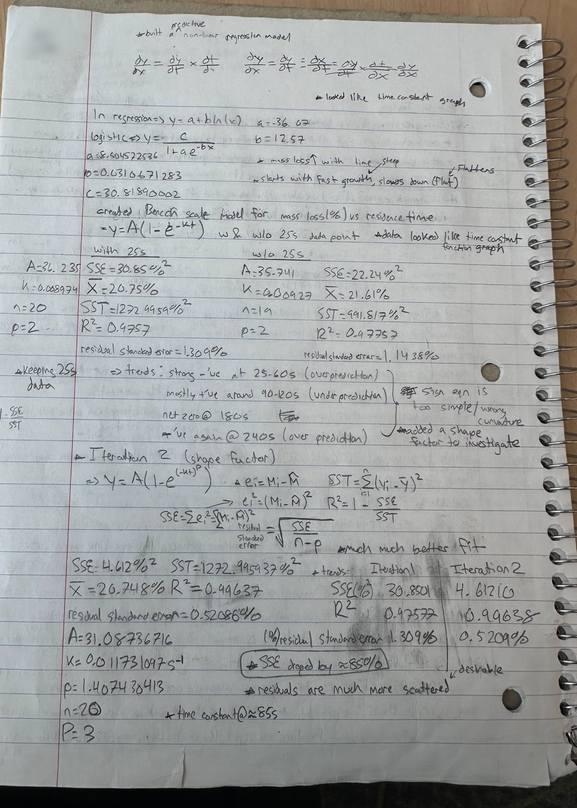
| Bench | Pilot | |
|---|---|---|
| Frequency / power | 2450 MHz / 3.2 kW | 915 MHz / 140 kW (150 kW rated; 140 kW max user setting) |
| Specific energy input | ~1,068 kWh/t | ~397 kWh/t |
| Mass / moisture removed | up to 31% | up to 24% |
Specific energy input fell 62.8% from bench to pilot. Separately, calcium fluoride drying trials achieved a 15% energy reduction.
The three pilot tests
| 70 kW, 30 s | 140 kW, 30 s | 140 kW, 60 s | |
|---|---|---|---|
| Mass loss | 4.9% | 13.4% | 24.0% |
| Absorbed microwave power | 69.8% | 78.8% | 76.0% |
| Cumulative input energy dose | 99.2 kWh/t | 196.3 kWh/t | 397.3 kWh/t |
| Max. IR temperature | 145 °C | 238 °C | 450 °C |
| Max. thermocouple temperature | 153 °C | 190 °C | 485 °C |
5 kg samples, starting at about 19–20 °C. From Table 4 of Marzoughi et al. (2026), Minerals Engineering 235, 109879, CC BY 4.0.
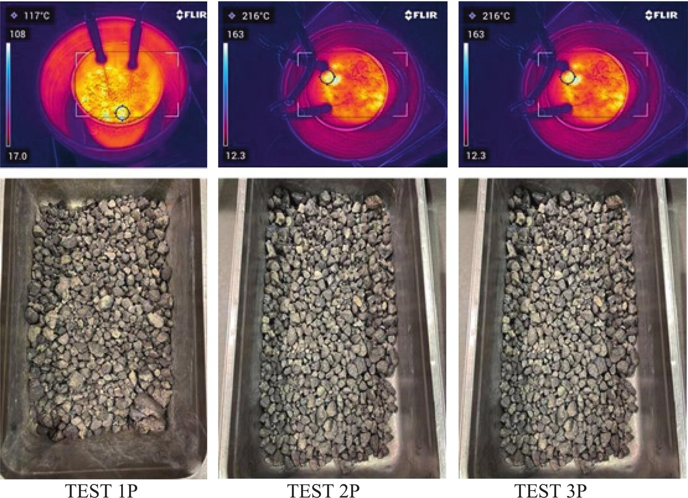
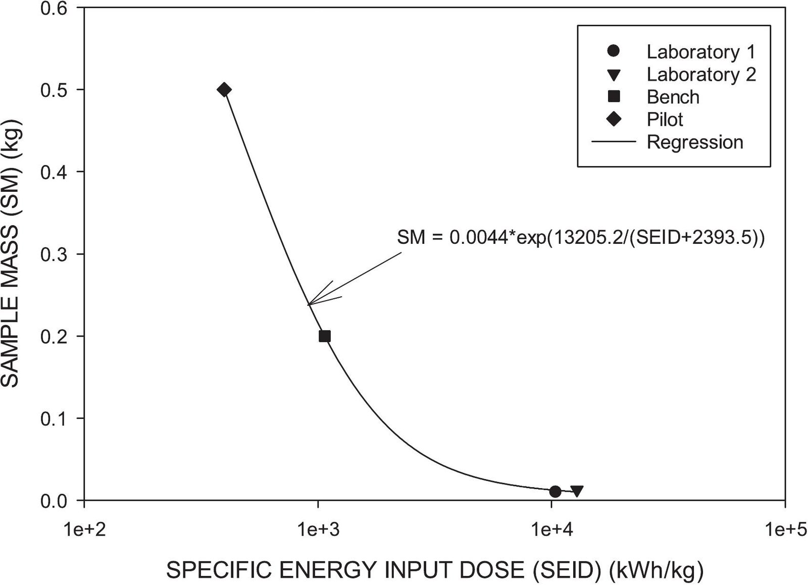
Analyzing absorbed microwave energy patterns in Excel, I found a 7.4% discrepancy between the pilot system's two water-cooled power generators. That led to three equipment recommendations:
- Switch to solid-state RF generators in place of the magnetron tube generators.
- Install auto-tuners so impedance between the microwave source and the load is matched in real time as the material's properties change.
- Optimize the volume filling factor (cavity size relative to the load) when the system is redesigned, based on a thermodynamic analysis.
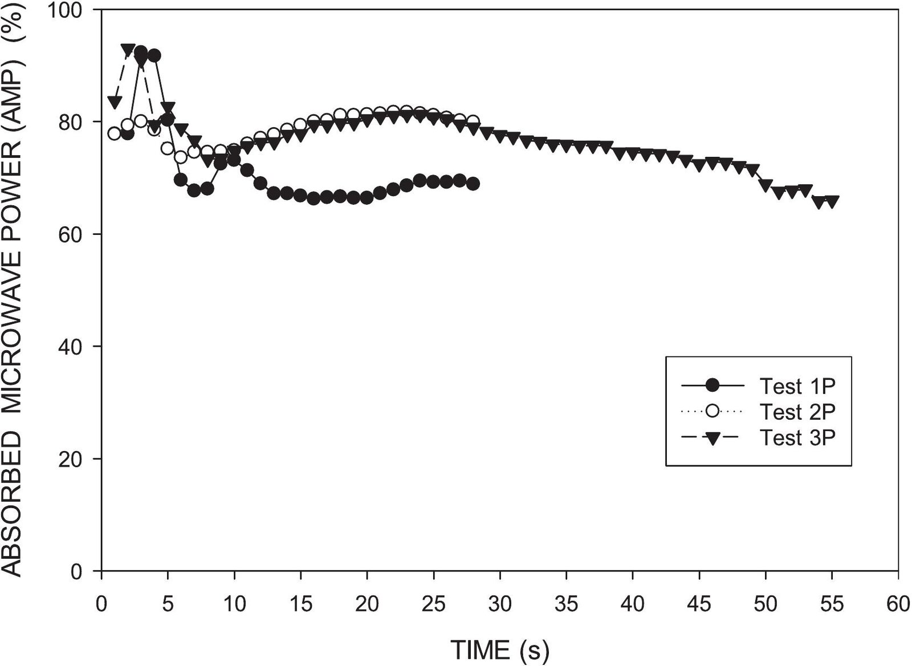
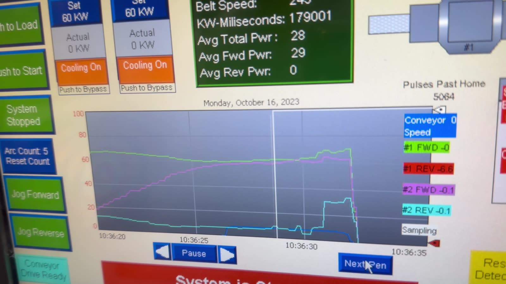
During one 120 kW run, reflected power on Generator 2 climbed to about 31 kW and the cavity's arc sensor logged five arc events; it cuts power once arcing lasts longer than its allowed time, so the system shut down. Rising reflected power usually means the load's dielectric properties are changing as it dries. That creates an impedance mismatch and sends energy back toward the generator, where a water circulator absorbs it to protect the magnetron, and it raises the risk of arcing.
My sample calculations, typeset from my hand calcs.
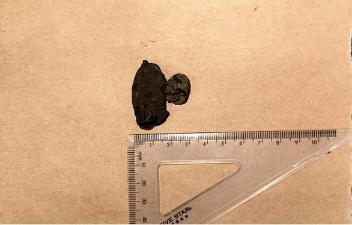
PhotoNodules after bench-scale treatment, cracked and partly fused by local thermal runaway.
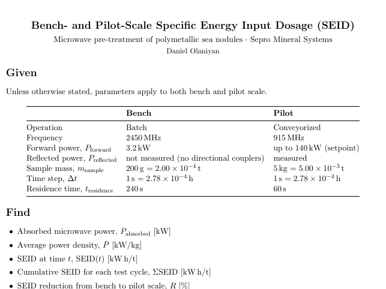
Sample calc · PDFSpecific energy input: bench vs. pilot SEID and the 62.8% reduction.
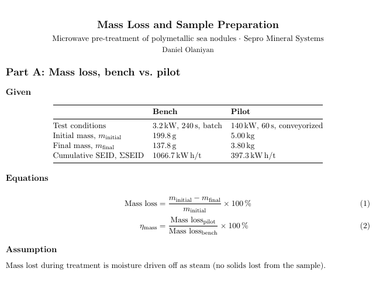
Sample calc · PDFMass loss at each scale, and the sample splitting that kept the size distribution matched.
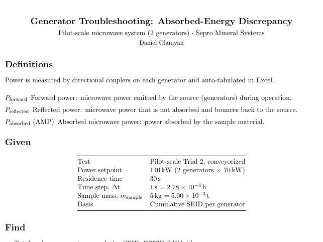
Sample calc · PDFGenerator troubleshooting: the 7.4-point energy split between the two generators.
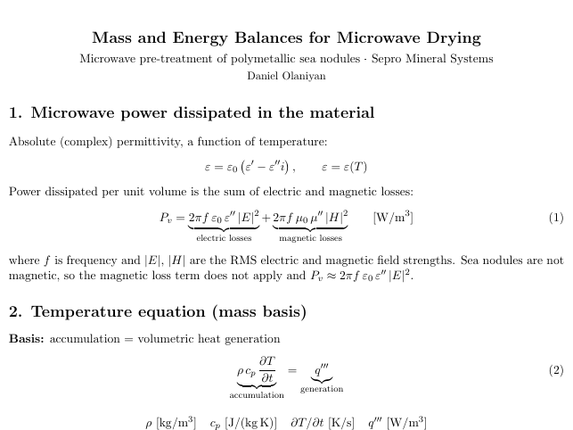
Sample calc · PDFMass and energy balances for microwave drying: heating rate and drying rate.
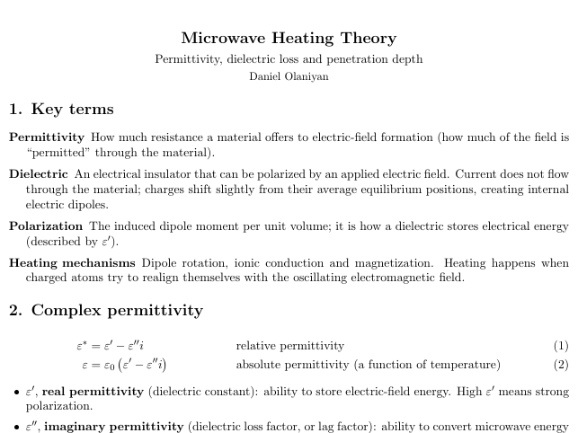
Sample calc · PDFMicrowave heating theory: permittivity, loss tangent and penetration depth.
- Marzoughi, O., Forster, J., Donald, J., and Pickles, C.A. (2026). Microwave dewatering of deep-sea polymetallic nodules: Bench-scale and pilot-scale studies. Minerals Engineering, 235, 109879. DOI
- Pilot run video, HMI control
- Static batches caused thermal runaway. Because the nodules would melt the conveyor trays, every pilot test ran as a batch with no material movement. At 140 kW for 60 s the sample fused, and the best run removed 24 wt% against 29.2 wt% total water, likely leaving bound water behind. Next time: keep the material moving while it heats (a continuous line with high-temperature trays, or a rotary setup), with pulsed power control.
- The equipment was part of the measurement. Absorbed power reflected how the two generators behaved, not only how the nodules responded: doubling the power raised it from 69.8% to 78.8%, but doubling the time didn't (76.0%). I didn't account for the generator mismatch at first. The second generator is there to excite more cavity modes and heat more evenly, so an imbalance between them undercuts the very uniformity it's meant to give. Next time: set limits for ramp-up time, generator balance and power stability before comparing tests; solid-state generators would remove ramp-up altogether.
- The bench dose was assumed; the pilot dose was measured. The bench figure assumed a constant 3.2 kW, all of it delivered. The pilot figure came from logged power, which delivered about 85% of nominal. The direction of the scale-up result holds, but the exact 62.8% carries that uncertainty. Next time: a directional coupler on the bench unit, so both scales are logged the same way.
“Daniel has excellent communication skills, engages in conversation, and is not afraid to assert his opinion. He has an innate ability for problem solving which was consistently demonstrated throughout his co-op term at Sepro. I am confident that Daniel will shine in any environment, given his highly compatible social skills and teamwork cooperation. Daniel was able to take on new challenges and derive solutions in real-time.”
Proprietary Sepro data and client information are not included. Figures shown are from published work or cleared for sharing.